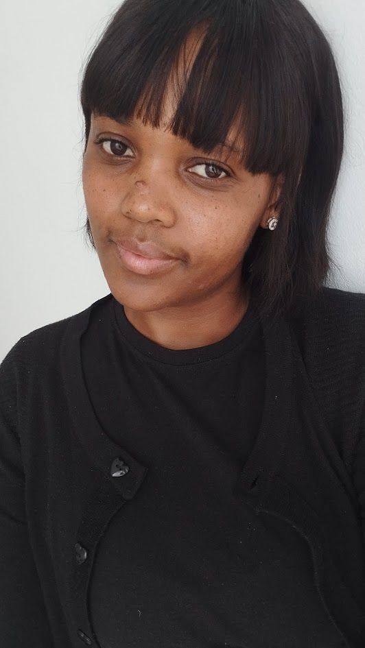

Refiloe Lacrena Moeta | WDD 130
My name is Refiloe Moeta. I live in Johannesburg, South Africa. I am mommy to three children and I love learning new things. This is my first time learning programming in any shape or form so I am both nervous and excited for the journey ahead. I enjoy listening to music, eating, watching movies and taking naps, hahaha! I am looking forward to an exciting journey of learning new things and discovering how far I can go if I apply myself and stay the course. I am editing this introduction on week 03 of the course to make it longer so that it can be properly aligned with my picture. I am very proud of myself for reaching this far in the course, especially since I work a fulltime job and also raising three children. I have gained some very valuable knowledge since the term began and I am excited to find out what more is still in store for me. In other unrelated news, the date for the Cape Town South Africa Temple has just been announced and it's so exciting. Cape Town is my favorite South African city and I'm just so happy that the saints over there will soon have a temple of their own. I have started saving up so my family and I can go to the house, whenever that will be. South Africa currently has two operating temples, so Cape Town will be the third. The one closest to me is the Johannesburg South Africa Temple, and then there's also Durban South Africa Temple. I hope to go visit soon. It's very beautiful. My husband and I got married in the Johannesburg South Africa Temple ten years ago. That's it about me.